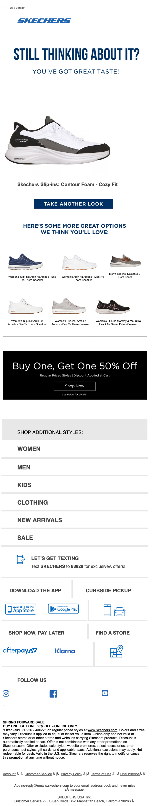

This is perfect for you!
| From | SKECHERS <hello@msgs.skechers.com> |
| Received | 2026-03-26 19:24 UTC |
| Score | 6/10 |
## Email Review: "This is perfect for you!" — Skechers Browse Abandonment
1. Executive Summary
This is a browse abandonment email targeting someone who viewed the Skechers Slip-ins Comfort Foam - Cozy Fit. The setup is solid — it names the product, recalls the browsing session with a warm tone, and pairs it with a BOGO 50% Off offer that should drive conversions. The structural problem is dilution: after a clean hero, the email piles on category nav, SMS sign-up, app download, curbside pickup, BNPL options, and social follow prompts — all competing for attention and burying the primary CTA beneath noise.
2. Business Impact Score: **6/10**
Strong intent signal (browse abandonment), but execution trades conversion focus for a kitchen-sink approach that will blunt click-through on the primary product.
3. What's Working
- Headline is confident and flattering. "Still thinking about it? You've got great taste!" is light, non-pushy, and brand-appropriate.
- Product recall is clear. The Slip-ins Comfort Foam - Cozy Fit is named and imaged prominently — the recipient knows exactly what triggered this.
- BOGO 50% Off banner is well-placed. Appearing right after the recommendation module, it gives a meaningful incentive to act now rather than come back later.
- "Take Another Look" CTA is specific and action-oriented — better than a generic "Shop Now."
4. What's Weak
- Recommendation module is undersized. The four "you'll love" products are rendered as small thumbnails in a horizontal row — hard to evaluate, easy to skip. No product names or prices are visible at this render size.
- Utility overload below the fold. The lower half packs in: category nav links, SMS sign-up, app download, curbside pickup, AfterPay/Klarna, and social follow — seven distinct modules. Each one dilutes attention from the main conversion goal.
- BOGO offer lacks urgency framing. There's no end date or stock-scarcity signal visible. A time-limited framing would sharpen the close.
- SMS sign-up module is oddly placed. Inserting "Let's Get Texting" mid-email, between navigation and app download, fragments the flow at a moment when the reader is close to converting.
5. Recommendations
1. Cut or collapse the utility modules. Consolidate app download, SMS sign-up, curbside pickup, and BNPL into a single slim footer strip — or cut them entirely from this flow. Browse abandonment emails should have one job.
2. Enlarge the recommendation grid. Show 2–3 products at a larger size with visible names and prices so the module does real discovery work, not just visual filler.
3. Add urgency to the BOGO banner. Even "Ends [date]" or "Limited time" copy tightens the decision window.
4. Move SMS/app acquisition to post-purchase flows. This audience hasn't bought yet — don't split their attention with a channel-building ask.
6. Bottom Line
The bones of a good browse abandonment email are here — product recall, warm tone, meaningful offer. The execution loses the thread by treating this as a general brand newsletter rather than a focused conversion nudge. Strip the noise below the BOGO banner and this becomes a genuinely effective send.
7. Evidence
Overall purpose: Browse abandonment / retargeting — nudges a viewer of the Slip-ins Comfort Foam back to purchase with a product reminder and a promotional offer.
Hero / primary value proposition: Headline "Still Thinking About It? You've Got Great Taste!" with the browsed product image and a blue "Take Another Look" CTA. Clear and well-executed.
Membership / benefits section: None visible. No loyalty or rewards messaging in this email.
Product discoverability / recommendation modules: One horizontal row of four small product thumbnails under "Here's Some More Great Options We Think You'll Love." Thumbnails are too small to read product details at render size — moderate discovery value at best.
Utility / secondary modules: Category nav (Women, Men, Kids, Clothing, New Arrivals, Sale), SMS opt-in ("Let's Get Texting"), app download (App Store + Google Play), curbside pickup icon, AfterPay/Klarna BNPL, social media icons, Find a Store. Seven distinct modules in the lower half.
Bugs / friction / clarity issues: No visible broken images or overlapping text. All modules render cleanly. The recommendation product images are small but intact. No visible display defects.
## Technical Audit
## Technical Email Audit — Skechers "This is perfect for you!"
Sender: hello@msgs.skechers.com | ESP: Attentive (attentivemail.com)
1. Technical Summary
Browse-abandonment email built on a standard table-based layout, sent through Attentive's click-tracking infrastructure. All click and image URLs use plain HTTP rather than HTTPS, presenting the most significant technical risk in this send.
2. Link & Tracking Issues
ISSUE — HTTP click-tracking URLs (all links)
Every tracked link routes through http://skechers.attentivemail.com/ls/click?... (non-TLS). Examples confirmed in source:
- Web version link:
http://skechers.attentivemail.com/ls/click?upn=u001.LNc6Vor... - Logo/home link:
http://skechers.attentivemail.com/ls/click?upn=u001.LNc6Vor...(secondupnvalue)
Gmail, Outlook, and Apple Mail flag mixed-content or plain-HTTP redirects with security warnings in some configurations. Attentive supports HTTPS tracking domains — this should be a subdomain CNAME configured with TLS.
ISSUE — HTTP image hosting
Hero image served from http://image.emails.skechers.com/lib/fe3115707564047a731c78/.... HTTPS image hosting is expected; HTTP images can be blocked by Outlook's "Download Pictures" prompt and flagged by spam filters scoring on HTTP-only content.
3. Rendering & Accessibility
ISSUE — Empty <title> element
<title></title> is blank. Some screen readers (NVDA + Outlook) announce the document title; a missing title degrades the experience for visually impaired recipients.
ISSUE — Layout tables missing role="presentation"
Structural tables (nl-container, row-content stack, etc.) lack role="presentation" and aria-hidden="true". Screen readers will attempt to interpret these as data tables, creating extraneous navigation noise.
OBSERVATION — Preheader padding technique
Preheader uses a mix of U+034F (combining grapheme joiner) and soft-hyphen (­) characters to push whitespace past the preview cutoff. This dual-character approach works but can render stray characters in certain clients (notably older Android Gmail app). A single consistent method (typically zero-width non-breaking spaces ​) is more reliable.
Cannot evaluate from truncated source: alt text on product images, color-contrast ratios on CTA buttons.
4. Personalization & Merge Tokens
No unresolved merge tokens visible in the provided HTML. Subject line ("This is perfect for you!") and preheader ("Take another look before these items sell out.") contain no dynamic tokens — expected for this trigger type. Full evaluation of product-recommendation tokens requires the untruncated source.
5. Compliance (CAN-SPAM / Unsubscribe)
Cannot fully evaluate — HTML is truncated before the footer. Required elements to confirm:
- Physical mailing address of advertiser
- Clear and conspicuous unsubscribe mechanism with ≤10-business-day honor window
- Sender identification consistent with
From:header (msgs.skechers.com)
Sending domain msgs.skechers.com is a subdomain dedicated to transactional/marketing sends, which is correct practice for reputation isolation. Authentication headers (SPF, DKIM, DMARC) are not verifiable from HTML source alone — should be confirmed via raw message headers.
6. Email-to-Site Continuity
All destination URLs are wrapped in Attentive's click tracker, so final UTM parameters cannot be confirmed from source without resolving the redirect chain. Verification needed:
- Confirm
utm_source,utm_medium,utm_campaignare appended after the Attentive redirect resolves toskechers.com - Browse-abandonment emails should carry
utm_contentor equivalent to distinguish this trigger from other email sends in analytics
7. Recommendations
| Priority | Action |
|---|---|
| High | Switch all click-tracking and image URLs to HTTPS via Attentive's TLS-enabled subdomain configuration |
| Medium | Add role="presentation" to all layout tables |
| Medium | Populate <title> with a descriptive value (e.g., "Skechers — Items You Viewed") |
| Low | Standardize preheader padding to a single invisible-character type |
| Verify | Confirm unsubscribe link, physical address, and SPF/DKIM/DMARC pass in raw headers |
| Verify | Confirm UTM parameters survive the Attentive redirect chain to skechers.com |
